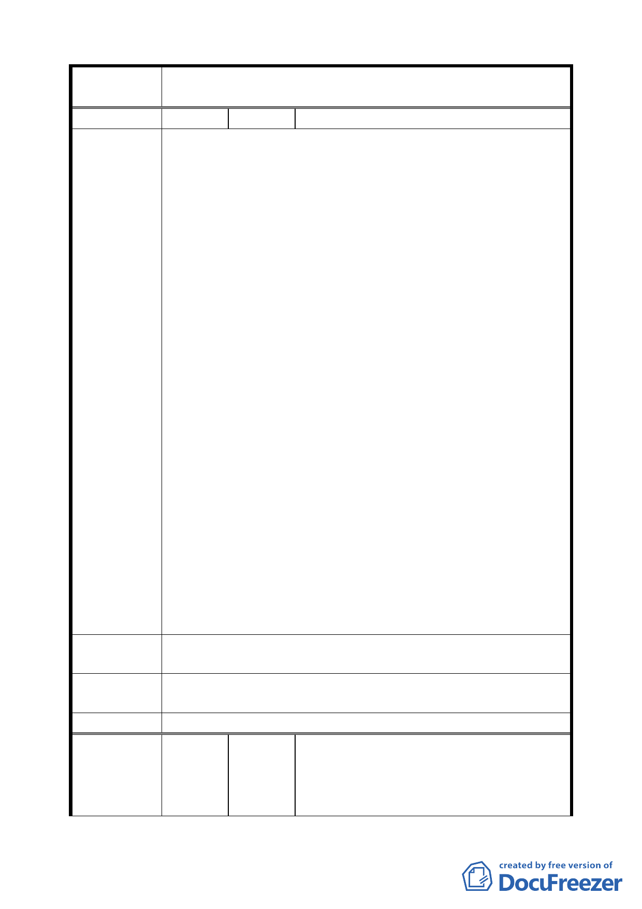

案 名 變更臺北市中正區齊東街附近住宅區為保存區及日式宿舍風
貌保存特定專用區主要計畫案
編
號2
陳情人 劉邦寧
建議位置：中正區臨沂段一小段 589、579、578 地號。
建議理由：
反對將本社區變更畫為「日式風貌保存區」其理由如下：
一、 依貴府公告之都市計畫書內容表示：要將本區土地使用
變更為「日式風貌保存特定區」，以創造具地區特色的
城市文化空間，本人聞知甚為氣結，貴府到底是何思
想？前一陣子烏來山區原住民立日文碑掛日本旗，即受
原住民立委高金素梅等抗議，最後遭台北縣政府唾棄，
而現在堂堂院轄市的台北都發局竟要將本區劃分區
塊，又要地主仿建成 60 年前日本侵佔台灣時期官員宿
舍之風貌（因本區大部分已殘破不堪或已損壞滅失，所
以大部分是要重建的『創造』），本人堅決反對將本區為
陳情理由
「日式風貌保存特定專用區」之變更。
二、 其次細部計畫書第 7 頁，其中保存區（2）經費 3000 萬
元要民間挹注，「日式宿舍風貌保存特定區」要經費
16400 萬元全部要所有權人自己支應，政府若要講文化
保存就要有能力去維護，首先請市政府思考一下，要求
民間挹注及強制所有權人之支應是否可達成？退一步
而言，以高經濟土地作仿日式宿舍建築，也就是說以犧
牲台灣經濟來懷念日本文化是否值得？又以高經濟土
地作仿日式宿舍建築有何經濟收益？所有權人如無經
濟收益如何會去維護保養？所以本計畫可為完全是空
談，騙百姓的遊戲。
三、 因此本人嚴正反對本都市計畫，如真要保存古蹟，只要
保存一、二戶即可，不必犧牲本區全區的發展來發揚日
本佔據時期文化。
建議辦法
保留已公告指定為古蹟的泰安街 2 巷 3 號及齊東街 53 巷 11
號 2 戶即可，其他地區應解禁開放，加速本區建設發展。
專 案 小 組 本案之變更範圍，基於整體環境形塑理念，原則同意依原公
審 查 結 論 展方案。
委員會決議 本案依文化局所提修正內容對照表修正通過。
陳金萬、李秋月、林言真、陳曉芬、林銘賢、謝玫娟、詹
聆幼、姚麗麗、高三率、黃其武、曾正棟、李耀軍、楊有
編
號3
陳情人 用、王先生、王翠屏、饒正奇、黃貝綾、劉昌甲、潘秋英、
林曉涵、劉亞蕙、簡淑芬、劉九思、高自強、黃英明、徐
平章、周絞瑤、吳振維、陳晤湄、林昊秀、張繡春、陳雪
六